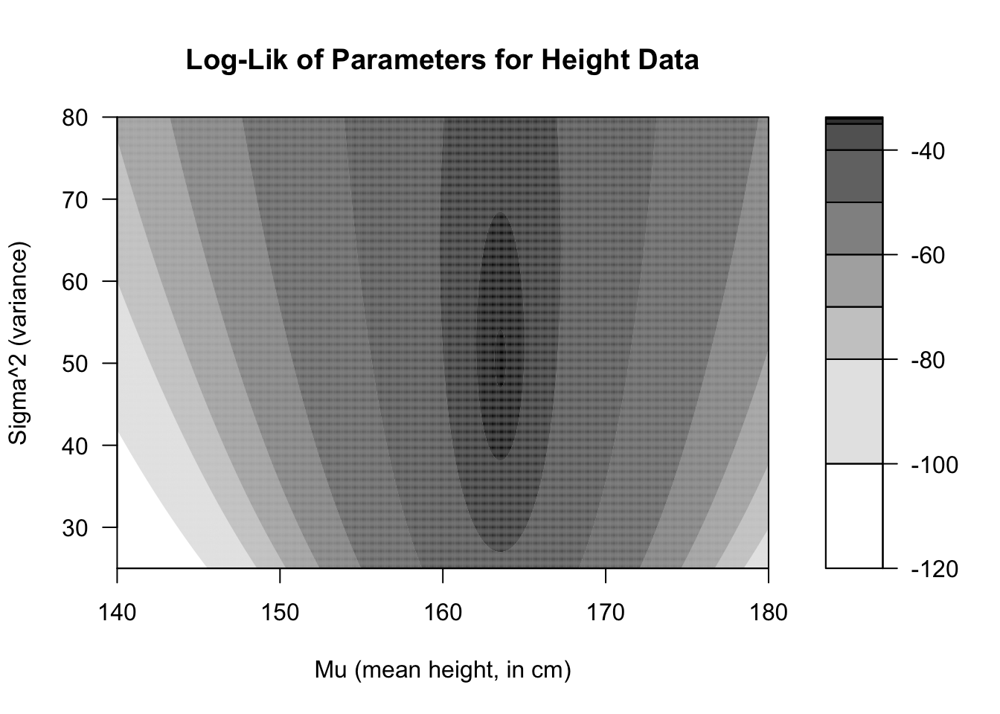

Let’s begin studying statistical inference with the simplest of cases: trying to determine the distribution which generated a single column of numbers. I assume your familiarity with some of the most common probability distributions: the discrete Bernoulli, binomial, geometric, and Poisson distributions, along with the continuous uniform, exponential, and normal distributions. If you need a refresher, the appendices contain more detail about each of these distributions and others we will study in later sections.
When we ask our computers today to model our data with set of parameters (such as the slope and intercept of a simple regression), the computer usually solves for the unknown parameters using maximum likelihood estimation, a method developed by Ronald Fisher over 100 years ago. The basic premise of maximum likelihood is to assume that the data aren’t… weird. Of course, the data could be weird: they could be unrepresentative or contain wild outliers. But usually, and by definition, our data aren’t unusual. So we will suppose that the best guess for the unknown parameters will be the values which make the data seem the most ordinary. There are other estimation methods worth learning, but in this course we will focus heavily on maximum likelihood estimation.
Motivation and definition
When we conduct statistical inference, we begin with data, and then we proceed to ask what distribution (and which parameters) could have created the data. Notice that this situation reverses the problems you might find in a high school or college class on probability. In those earlier classes, you would often be asked “if the parameters for this distribution are \(\theta\), then what is the probability of observing \(\boldsymbol{x}\)?” For example:
If a fair coin is flipped 50 times, what is the probability of observing exactly 27 heads and 23 tails?
If the heights of adult women in the United States are normally distributed with a mean of 162 cm and a standard deviation of 7 cm, what is the probability of drawing a sample of ten women who are all shorter than 152 cm?
Instead, the shoe is now on the other foot:
We flip a coin 50 times and observe 27 heads and 23 tails. Is it reasonable to believe that the coin is fair, despite these lopsided results?
We observe the heights of ten women, and we assume they represent a sample from a population which is normally distributed. Based on our sample, what are realistic ranges for the unknown mean \(\mu\) and variance \(\sigma^2\)?
To answer these questions, we will invent a way to “score” each set of possible parameters for a specific dataset. The parameters which seem well fit to the data will receive a higher score. We will consider all parameter choices which score highly as reasonable guesses for the unknown truth, but if we need to make just one guess, then we will choose the parameter or set of parameters with the highest score. We will call this scoring function likelihood.
Imagine a univariate sample \(\boldsymbol{x} = x_1,x_2,\ldots,x_n\) which we believe came from a discrete probability distribution \(X\) with parameters \(\theta\), and assume for the moment that the observations are independent of each other. Then we could compute the probability of observing the entire sample simply by multiplying together the probabilities of each individual observation:
The equation above treats \(\theta\) as a fixed assumption and \(\boldsymbol{x}\) as the input variable. Now we will repurpose this same function but treat \(\boldsymbol{x}\) as the assumption and \(\theta\) as the variable. We will also take the opportunity to extend this idea to a continuous case, using densities rather than probability mass functions:
Let \(X\) be a random variable dependent on one or more parameters \(\theta\) and \(\boldsymbol{x} = x_1,x_2,\ldots,x_n\) be independent sample observations where \(x_i \sim X \quad \forall i \in \mathbb{N}: \ 1 \le i \le n.\) Then we write the likelihood of \(\theta\) given \(\boldsymbol{x}\) as \(\mathcal{L}(\theta|\boldsymbol{x})\). If \(X\) is discrete, we define:
If \(\theta\) has \(k\) parameters, let \(\mathcal{S} \in \mathbb{R}^k\) be the set of values \(\theta\) can take which are permitted by the distribution of \(X\) and the observed values of \(\boldsymbol{x}\). Then the choice for \(\theta\) which maximizes \(\mathcal{L}(\theta|\boldsymbol{x})\) is referred to as the maximum likelihood estimator (MLE) for \(\theta\):
Notice that likelihood functions are usually products of the individual probabilities/densities of each observation in the sample. It can be difficult to directly maximize a complicated product of many terms. Happily, we can use one or two tricks which greatly simplify maximum likelihood estimation. The first trick is to notice that the log of a function reaches its maximum or minimum at the same input values as the original function (that is, logarithms are a monotonic transformation). Below I plot the likelihood function for the coin data mentioned above: 27 heads and 23 tails. I also will plot the log of the likelihood function:
Code
#generate coin datacoins <-c(rep(1,27),rep(0,23))#compute likelihood and log-likelihood functionscoin.lik <-function(p) p^sum(coins)*(1-p)^sum(1-coins)coin.ll <-function(p) sum(coins)*log(p)+sum(1-coins)*log(1-p)#plot coin likelihood and log-likelihoodpar(mfrow=c(1,2),bty='n',cex=0.8)plot((1:99)/100, coin.lik((1:99)/100),type='l',lwd=2,main="Likelihood of Coin Parameter 'p'",xlab='p (Prob. of Heads)',ylab='Likelihood')abline(v=mean(coins),lwd=2,lty=2,col='grey50')text(x=mean(coins),y=0,pos=4,col='grey50',labels=paste0('x=',round(mean(coins),2)))plot((1:99)/100, coin.ll((1:99)/100),type='l',lwd=2,main="Log-likelihood of Coin Parameter 'p'",xlab='p (Prob. of Heads)',ylab='Log-likelihood')abline(v=mean(coins),lwd=2,lty=2,col='grey50')text(x=mean(coins),y=-120,pos=4,col='grey50',labels=paste0('x=',round(mean(coins),2)))
Figure 1.1: Likelihood and log-likelihood of coin flip data
Since the log of a product is simply the sum of logs of each term in the product, we often find log-likelihood proves easier to maximize than the original likelihood function.
Let \(\mathcal{L}(\theta|\boldsymbol{x})\) be the likelihood of a parameter \(\theta\) given a sample \(\boldsymbol{x}\) and a distributional assumption about the random variable \(X\) from which the sample was drawn. Then we denote the log-likelihood of \(\theta\) given \(\boldsymbol{x}\) as \(\ell(\theta|\boldsymbol{x})\) and define it as
The second trick which we use to more easily maximize likelihood is calculus. When a likelihood function is continuously differentiable and has a local maximum (as the two graphs do above), then the same parameter value which maximizes the likelihood and log-likelihood will be a root of the first derivative of the log-likelihood:
Code
# create first derivative of coin log-likelihood functioncoin.dll <-function(p) sum(coins)/p-sum(1-coins)/(1-p)# graph first derivative of coin log-likelihood functionpar(mfrow=c(1,1),bty='n',cex=0.8)plot((1:99)/100, coin.dll((1:99)/100),type='l',lwd=2,main="Derivative of LL of Coin Parameter 'p'",xlab='p (Prob. of Heads)',ylab='dLL/dp')abline(h=0)abline(v=sum(coins)/length(coins),lwd=2,lty=2,col='grey50')text(x=sum(coins)/length(coins),y=-2000,pos=4,col='grey50',labels=paste0('x=',round(sum(coins)/length(coins),2)))
Figure 1.2: First derivative of the log-likelihood of coin flip data
Example 1: Coin flips
Suppose that we were given a coin and told it was fixed to land on one side more than the other. We flip the coin 50 times and record each ‘heads’ as 1 and each ‘tails’ as 0. The results below show that the coin landed ‘heads’ 27 times and ‘tails’ 23 times.
Let us make a distributional assumption: the coin data can be modeled by a Bernoulli distribution. We cannot know whether this is correct or not, but it seems reasonable: Bernoulli trials require exactly two outcomes, a fixed probability of success, and independence between trials. While it’s possible that the coin could land on its edge, or that it deforms over time, or that it shows serial correlation, modeling the coin flips as Bernoulli trials seems true enough to be useful.1
What is the probability of observing the data if the coin truly lands heads 60% of the time? You should be able to answer this from your past lessons in probability and statistics. Since we assume trials to be independent, we can write:
A very small number… although these results are actually quite unextraordinary, there are simply so many ways that 50 coin flips can occur (1.13 quadrillion ways) that even the most common sequences each have a very, very low probability.
What is the likelihood for any given parameter \(p\), given our dataset of 27 heads in 50 flips?
What is the value of \(p\) which maximizes this likelihood? It’s not immediately evident from the equation above, but perhaps the log-likelihood will help us to solve for \(p\):
This is still difficult to solve by hand, so let’s bring in the final trick, and instead try to find the root of the first derivative of the log-likelihood:
In fact, we could abstract a little further here to find the MLE for any Bernoulli-distributed sample. Let \(k\) be the number of successes and \(n\) be the total number of trials. Using the same math as above, you will find that:
\[\hat{p}_\mathit{MLE} = k/n = \frac{\sum_i x_i}{n} = \bar{x}\] This is a tidy little result. When our data are Bernoulli distributed, then the maximum likelihood estimator for the parameter \(p\) is simply the sample average, i.e. the proportion of observations that were successes. I like findings such as these which conform with our intuition: when we have data on a Bernoulli process, our best guess as to how often successes truly happen will simply be how often successes occurred in our data.
Example 2: Heights
The above example used a very simple discrete distribution with a single parameter. Let’s try again with a more complicated continuous distribution, which uses two parameters. Across the entire world population, heights are not exactly distributed according to any known distribution. However, among otherwise homogeneous populations, we do observe that heights are roughly normally distributed. Let’s pretend that we sampled 10 adult women in the United States and measured their heights. Rounded to the nearest tenth of a centimeter, their heights are listed below:2
\[\boldsymbol{x}=\{170.1,161.6,175.2,166.3,165.6,165.8,152.0,155.8,168.6,154.3\}\] Let us assume that these heights are drawn from a normal distribution. What then would be the best guess for the parameters \(\mu\) and \(\sigma^2\), which are the mean and variance of the distribution? We will start by finding the likelihood function. Recall that if \(X\) is normal,
\[f_X(x|\mu,\sigma^2)=\frac{1}{\sqrt{2\pi\sigma^2}} e^{-\frac{1}{2\sigma^2}(x-\mu)^2}\] From this, we can compute the likelihood of any pair of normal parameters for any dataset:
\[\mathcal{L}(\mu,\sigma^2|\boldsymbol{x}) = (2\pi\sigma^2)^{-n/2}\cdot e^{-\frac{1}{2\sigma^2}\sum_{i}(x_i-\mu)^2}\] Then, we can find the log-likelihood:
Next, we will take the derivative with respect to \(\mu\):
\[\frac{\partial\ell}{\partial\mu} = \frac{1}{\sigma^2} \sum_{i}(x_i-μ) \] From here we will solve for the root of the derivative, which will be the value of \(\mu\) that maximizes the original likelihood function:
What a fantastic bit of luck. The best guess for the true mean of a normal distribution is the sample mean of our data! Let’s finish up by repeating for variance: first we take the partial derivative of the log-likelihood with respect to \(\sigma^2\):
\[\frac{\partial\ell}{\partial\sigma^2} = -\frac{n}{2\sigma^2} + \frac{1}{2\sigma^4}\sum_i (x_i-\mu)^2\] Then we will solve for the root of the derivative, which will be the value of \(\sigma^2\) which maximizes the original likelihood function:
You may recognize this quantity as the biased (uncorrected) sample variance. Although this calculation seems very sensible, we will later show that it systematically underestimates the true variance \(\sigma^2\), which provides our first hint that maximum likelihood estimation is not the final answer for every problem we will encounter.
With these results in hand, we can produce the MLEs for our normal parameters given our height data. We would say that the best guess for the true mean height of adult women in the United States is 163.5 cm and the best guess for their variance would be 50.4 cm\({}^2\) (implying a standard deviation of 7.1 cm).3
Code
#generate height dataheights <-c(170.1,161.6,175.2,166.3,165.6,165.8,152.0,155.8,168.6,154.3)#generate height parameter ll contour plotheight.ll <-function(parms) {-1*length(heights)*log(2*pi*parms[2])/2-sum((heights-parms[1])^2)/(2*parms[2])}xgrid <-seq(140,180,0.1)ygrid <-seq(25,80,0.1)zgrid <-matrix(apply(cbind(rep(xgrid,times=length(ygrid)),rep(ygrid,each=length(xgrid))),1,height.ll),ncol=length(ygrid))filled.contour(xgrid,ygrid,zgrid,levels=c(-120,-100,-80,-70,-60,-50,-40,-35,-34,-33.8,-33.7),col=paste0('#000000',c('00','20','40','60','80','9f','af','cf','ef','ff')),main='Log-Lik of Parameters for Height Data',xlab='Mu (mean height, in cm)',ylab='Sigma^2 (variance)')

Figure 1.3: Contour plot of height data log-likelihoods
We can confirm that these solutions are reasonable by plotting the log-likelihood of various combinations of mean and variance, seen above. Notice that a broad range of possible means and variances have log-likelihoods close to the maximum value of -33.8. Any of these combinations could easily have generated our data. But if we have to make one guess, then the MLE values of (163.5, 50.4) would be our best choice.
Visualizer
This visualizer shows an exponential distribution, which is often used to model the waiting times between events. You can create a sample by adjusting the rate parameter \(\lambda\) (e.g.\(\lambda=5\) might mean an average of five events per hour), and the total sample size. Then the visualizer will plot the raw data (each waiting time) as well as the likelihood, log-likelihood, and derivative of the log-likelihood function for the parameter \(\lambda\).
Notice how the parameter value made most likely by your data will never quite “right” (i.e. equal to the true parameter.) But as sample size increases, the estimates usually get closer to the true value, and the likelihood function develops a very narrow “peak” around our estimate, meaning that the other values are not made very likely by our data.
#| '!! shinylive warning !!': |
#| shinylive does not work in self-contained HTML documents.
#| Please set `embed-resources: false` in your metadata.
#| standalone: true
#| viewerHeight: 900
library(shiny)
library(bslib)
ll <- function(lambda,x) length(x)*log(lambda) - lambda*sum(x)
l <- function(lambda,x) exp(ll(lambda,x))
dll <-function(lambda,x) length(x)/lambda - sum(x)
x.axis <- seq(0.05,6.0,0.05)
ui <- page_fluid(
tags$head(tags$style(HTML("body {overflow-x: hidden;}"))),
title = "Likelihood for an Exponential sample",
fluidRow(column(width=6,sliderInput("lambda", "Lambda (rate)", min=1, max=5, value=3)),
column(width=6,sliderInput("nsamp", "N (sample size)", min=10, max=1000, value=100))),
fluidRow(column(width=6,plotOutput("distPlot1")),
column(width=6,plotOutput("distPlot2"))),
fluidRow(column(width=6,plotOutput("distPlot3")),
column(width=6,plotOutput("distPlot4"))))
server <- function(input, output) {
x <- reactive({rexp(n=input$nsamp,rate=input$lambda)})
output$distPlot1 <- renderPlot(hist(x(),main='Histogram of Data',xlab='Waiting time',ylab='Frequency'))
output$distPlot2 <- renderPlot(plot(x.axis,l(x.axis,x()),main='Likelihoods for Lambda',xlab='Lambda',ylab='Likelihood',type='l',xlim=c(0,6)))
output$distPlot3 <- renderPlot(plot(x.axis,ll(x.axis,x()),main='Log-likelihoods for Lambda',xlab='Lambda',ylab='Log-likelihood',type='l',xlim=c(0,6)))
output$distPlot4 <- renderPlot({plot(x.axis,dll(x.axis,x()),main='First Derivative of LL for Lambda',xlab='Lambda',ylab='dLL/dLambda',type='l',xlim=c(0,6)); abline(v=0,lty=2)})
}
shinyApp(ui = ui, server = server)
You may recall the statistician George Box’s maxim: all models are wrong, some are useful.↩︎
For the stubborn imperial-unit diehards among us, these heights range from five feet (60”) to five feet nine inches (69”).↩︎
Or for provincial bumpkins like myself: 64 in, 20 in\({}^2\), and 3 in.↩︎